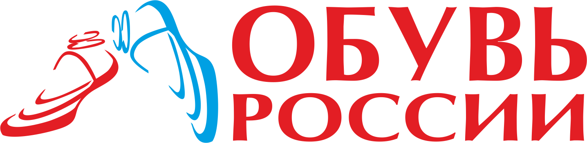

О компании
OR Group (группа компаний «Обувь России») — российский ритейлер одежды и обуви. Головной офис находится в городе Новосибирске. Компания развивает пять основных розничных брендов: Вестфалика, Пешеход, Emilia Estra, Rossita, Lisette; управляет маркетплейсом Westfalika.ru и онлайн-платформой «Продаем». OR Group управляет двумя производственными площадками в Новосибирской области и развивает собственные бренды обуви all.go и S-TEP и бренд верхней одежды Snow Guard. Акции OR Group котируются на Московской Бирже. В 2022 году допустила ряд дефолтов по облигациям, после чего банк ВТБ анонсировал подачу иска в суд о признании компании банкротом.
Логотип компании
Собственники
Состав акционеров компании :
Генеральный директор Антон Титов (50 %);
Свободное обращение на бирже (48 %);
Иные акционеры (2 %).
Руководство
Антон Титов — главный исполнительный директор;
Главный исполнительный директор компании
История
- 2003 год: OR Group начинает работу как розничная компания с продажи обуви в собственных магазинах под маркой «Вестфалика».
- 2006 год: OR Group начала развивать сеть мультибрендовых обувных супермаркетов «Пешеход»
- 2007 год: компания первой на российском обувном рынке начинает продавать обувь в кредит
- 2010 год: компания заключает годовой контракт с певицей Валерией на использование ее образа в рекламных кампаниях «Вестфалики»
- 2011 год: был подписан контракт о сотрудничестве с немецким дизайнером Томасом Франком, который ответственен за разработку и совершенствование коллекций «Вестфалика», за развитие бренда «Вестфалика»
- 2014 год: в марте был запущен интернет-магазин обувной сети Westfalika. В июне состоялось открытие фабрики по производству обуви из материала ЭВА литьевым методом под брендом all.go. OR Group объявила о запуске новой обувной сети Emilia Estra, а также об основании нового бренда верхней одежды — Snow Guard. В конце года OR Group приобрела одного из крупнейших на Урале и в Сибири игроков обувного рынка — компанию «Россита».
- 2015 год: В ноябре компания приобрела 100 % обувной компании S-TEP, в состав которой входит обувная фабрика в городе Бердске Новосибирской области и подразделение по оптовой продаже обуви
- 2016 год: OR Group и Orisol открыли совместный учебный центр — первый и единственный в России и странах СНГ. Учебный центр прежде всего ориентирован на подготовку конструкторов-модельеров, технологов и инженеров, которые работают с современными ЧПУ-станками, 3D программами. Михаил Прохоров вкладывает в бизнес около $ 15 млн.
- 2017 год: В октябре 2017 года OR Group привлекла 5,9 млрд рублей в ходе IPO на Московской бирже (MCX) (тикер OBUV), эмитентом является ПАО «ОР», став первой Публичной компанией на российском обувном и fashion-рынке
- 2018 год: В мае OR Group одной из первых в российском ритейле внедрила блокчейн в управление финансовыми сервисами
- 2019 год: OR Group усовершенствовала бизнес-модель и начала развивать маркетплейс
- 2020 год: «Обувь России» приняла решение провести ребрендинг и стать универсальным ритейлером, новое название — OR Group